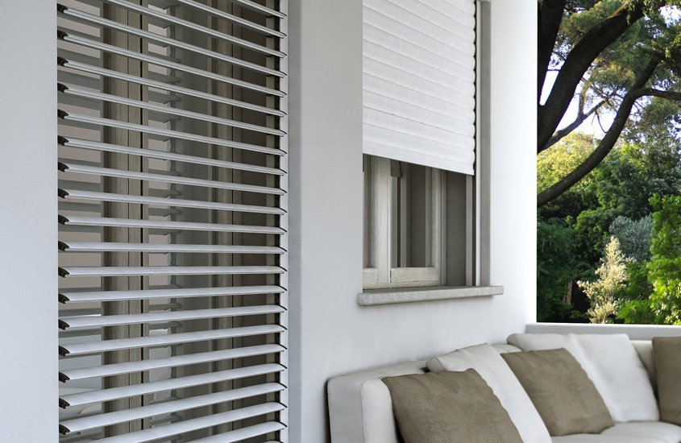
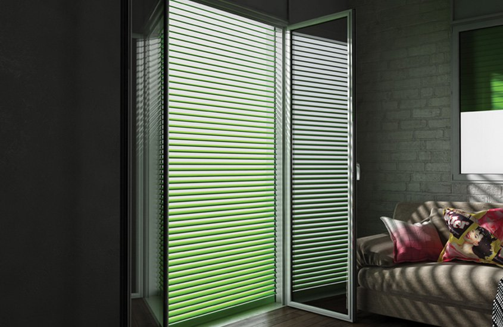
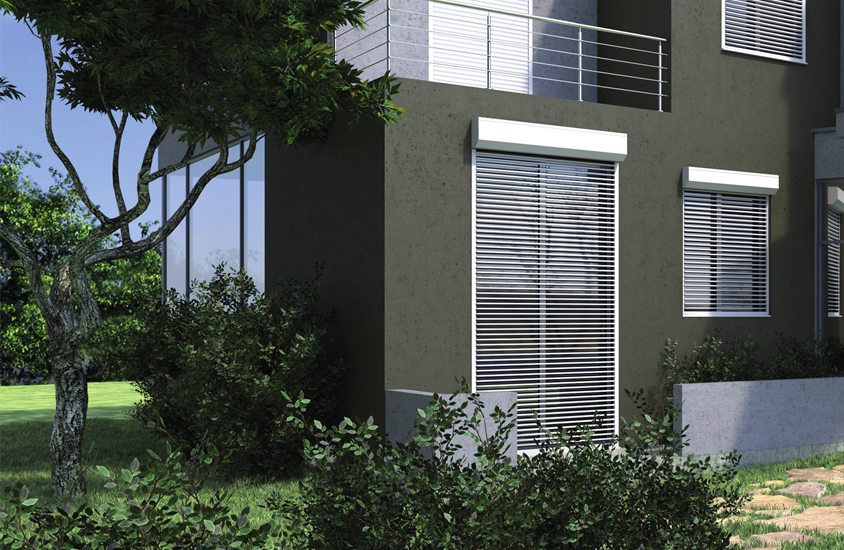
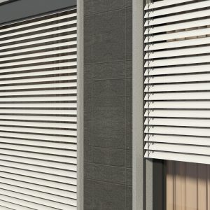
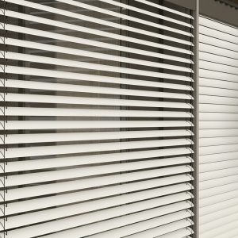
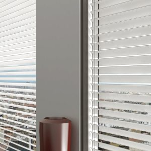
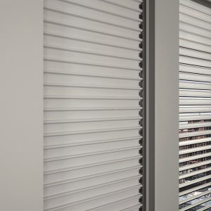
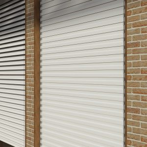
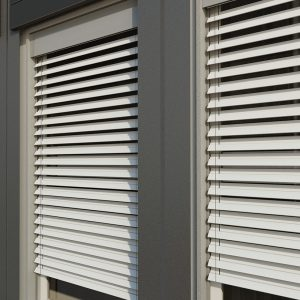

Le Tapparelle avvolgibili orientabili offrono una
durabilità straordinaria unita alla facile
e quasi inesistente manutenzione. Disponibili in
alluminio, in acciaio e in PVC. Un
prodotto che offre sicurezza, funzionalità e
valore estetico alle finestre. La tapparella avvolgibile
e la persiana a lamelle orientabili della
RollTek offre:
- Regolazione della luce esterna: permette di
regolare a piacimento la luce e l’aria all’interno
dell’appartamento.
- Orientamento ampio e continuo: orienta le
lamelle in modo graduale e da 0° a 110°.
- Massima silenziosità: elevato confort
grazie alla movimentazione fluida e silenziosa.
Tapparella RollTek Smart
La tapparella orientabile, silenziosa che garantisce un oscuramento elevato. La movimentazione della tapparella e la regolazione dell’inclinazione delle lamelle avviene con un unico motore, azionato tramite pulsantiera a muro e/o telecomando. Il dispositivo è facilmente interfacciabile con gli altri sistemi domotici della casa.
Tapparella RollTek Slim
Ideale per le tue esigenze di ristrutturazione, Rolltek Slim, pur funzionando nelle comuni guide per tapparelle, a telo abbassato, consente la gestione graduale dell’ingresso di aria e di luce mantenendo diametri di avvolgimento ridotti.
Tapparella RollTek Extra
La prima tapparella ad avvolgimento esterno, di sicurezza e a lamelle orientabili. Resistente alle effrazioni manuali, automatizzata, orientabile e durevole.
Le tapparelle avvolgibili
Le tapparelle avvolgibili in alluminio sono composte da profili in alluminio coibentato con poliuretano espanso ecologico. Sono tutti provvisti di certificazione CE.


ORIENTA: la tapparella orientabile!
L'avvolgibile a stecche orientabili. Sintesi tra avvolgibile e persiana, offre solo il meglio dei due mondi. Il suo funzionamento non richiede meccanismi all'interno delle guide, pertanto è possibile installarla come un normale avvolgibile su nuove costruzioni o sostituirla alle esistenti. Non necessita di manutenzione e garantisce un funzionamento costante nel tempo!
- Risparmio Energetico: Eco sostenibilità e risparmio economico Utilizzare Orienta vuol dire risparmiare energia. Grazie alla sua funzione di schermatura solare, protegge gli ambienti dalla radiazione diretta, favorisce il riciclo dell'aria, consentendo una naturale climatizzazione degli ambienti.
- Sicurezza: Una vera barriera protettiva, realizzata con profili di alluminio e meccanismi robusti e compatti. La sua particolare conformazione crea una vera barriera antieffrazione.
- Privacy: Libertà di vivere i tuoi spazi, Orienta consente di vivere i propri spazi in piena libertà, protetti da sguardi indiscreti, senza rinunciare a luce e aria.
Le possibili configurazioni di Orienta


Come funziona Orienta?

Frangisole Pinto
Il frangisole è una chiusura oscurante ideale per bilanciare il risparmio energetico e lo sfruttamento razionale della luce diurna. Protezione dal calore, protezione dall’abbagliamento, abbattimento del consumo energetico per il rinfrescamento degli ambienti durante il periodo estivo , sfruttamento della luce diurna e miglioramento del benessere fisiologico delle persone , visibilità esterna nel rispetto della privacy.
Frangisole C 65
Il Frangisole C 65 è un modello adatto per istallazione all’esterno in spazi ridotti, con lamella curva da 65mm ribordata con guarnizione antirumore e guide rigide di scorrimento laterali. È ideale per il montaggio in luce o in aggetto. Le lamelle possono essere orientate in ogni posizione con movimento a 90° con un oscuramento fino al 75%. In assenza della nicchia di contenimento è possibile completare l’istallazione con una veletta di copertura esterna.
Frangisole C 80
Il Frangisole C 80 è un modello adatto per istallazione all’esterno per grandi luci, con lamella curva da 80mm ribordata con guarnizione antirumore e guide laterali di scorrimento. È ideale per il montaggio in luce o in aggetto. Le lamelle possono essere orientate in ogni posizione con movimento a 90° con un oscuramento fino al 75%. In assenza della nicchia di contenimento è possibile completare l’istallazione con una veletta di copertura esterna.
Frangisole C 80 CAVO
Il Frangisole C 80 Cavo è un modello adatto per istallazione all’esterno per facciate continue vetrate in “doppia pelle”, con lamella curva da 80mm ribordata con guarnizione antirumore e guide laterali in cavo con rivestimento in pvc. È ideale per il montaggio in luce o in aggetto. Le lamelle possono essere orientate in ogni posizione con movimento a 90° con un oscuramento fino al 70%. In assenza della nicchia di contenimento è possibile completare l’istallazione con una veletta di copertura esterna.
Frangisole P 97
Frangisole P 97 per esterno con lamelle in alluminio al Mq preverniciate resistenti a 800 ore di nebbia salina, nei colori RAL come da scheda prodotto, di spess. 0,75 mm, larghezza 97 mm con nervature longitudinali di irrigidimento su entrambi i lati, guarnizione antirumore ed oscuramento inserita nella nervatura inferiore interna; le lamelle sono corredate alle due estremità di clips in acciaio inox per il collegamento a scatto ai pivotti portalamelle.
Frangisole Z 70
Il Frangisole Z 70 è un modello adatto per istallazione all’esterno in spazi ridotti, con lamella a Z da 70mm ribordata con guarnizione antirumore e guide rigide di scorrimento laterali. È ideale per il montaggio in luce o in aggetto. Le lamelle possono essere orientate in ogni posizione con movimento a 90° con un oscuramento fino al 90%. In assenza della nicchia di contenimento è possibile completare l’istallazione con una veletta di copertura esterna.
Frangisole Z 90
Il Frangisole Z 90 è un modello adatto per istallazione all’esterno per grandi luci per ogni tipo di applicazione e in ogni contesto, con lamella a Z da 90mm ribordata con guarnizione antirumore e guide rigide di scorrimento laterali. È ideale per il montaggio in luce o in aggetto. Le lamelle possono essere orientate in ogni posizione con movimento a 90° con un oscuramento fino al 90% con un gradevole impatto estetico.
